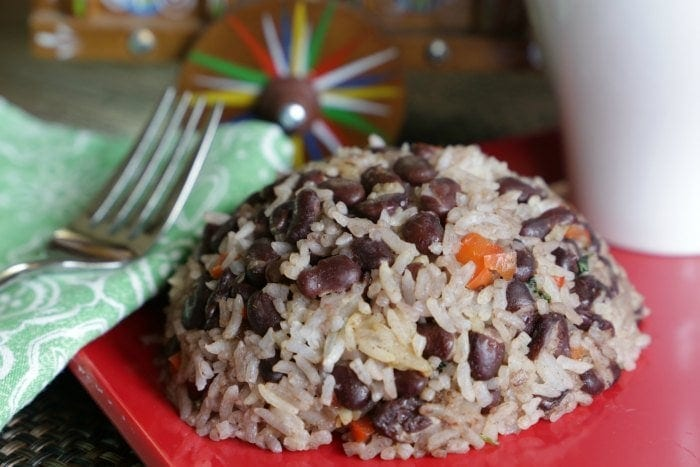

Gallo Pinto

This Costa Rican gallo pinto recipe is traditionally served at breakfast alongside eggs, coffee and tortillas. We combine black beans and white rice with red bell pepper, cilantro, onion and Salsa Lizano. Perfectly pura vida!
Basically, if you visit Costa Rica and don’t see gallo pinto- you might want to check if you went to the right country.
Ingredients
- 2 cups cooked white rice
- 2 cups cooked black or red beans
- 1/4 cup bean broth or water
- 1/4 cup yellow onion finely chopped
- 1/4 cup red pepper finely chopped
- 1/8 cup finely chopped cilantro leaves
- 1 tbsp Salsa Lizano
- 1 tsp sea salt
- 2 tsp vegetable oil
Steps
- (These instructions assume you have already done the first two steps- cook the rice and beans ahead of time.)
- Heat oil in a large skillet over medium heat. Add onion, pepper, cilantro and salt. Lightly cook until the onion is translucent. You have just made sofrito!
- Add the beans with broth and toss with the spices and oil. Add the Salsa Lizano.
- Add the cooked rice to the skillet and toss until well combined with the beans and spices. Heat thoroughly and serve- preferably with fried eggs, warm corn tortillas and a hot cup of Costa Rican coffee!
For full recipe click here
Return to recipes home page